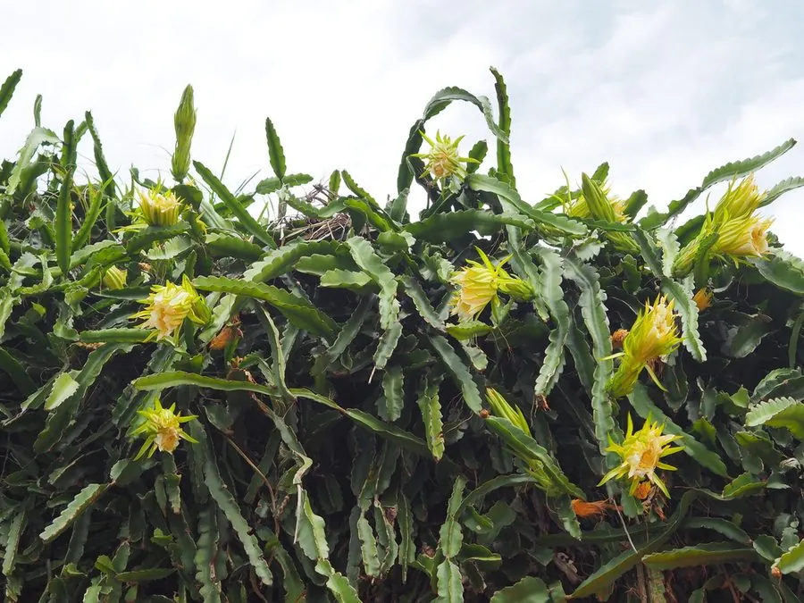

多肉植物 · 植物界
火龙果 Selenicereus undatus

仙人掌科攀援多肉，夜开大花，结出红皮白肉或红肉的果实，是热带地区重要的经济果树，又名量天尺。
- 分类
- 门被子植物门纲木兰纲目石竹目科仙人掌科属蛇鞭柱属
- 栖息环境
- 中美洲热带雨林边缘与干旱灌丛，攀附于树木和岩石
- 地理分布
- 原产中美洲，中国海南、广西、广东、云南等地规模化种植
- 保护级别
- 暂无评估
物种志
火龙果即量天尺，为仙人掌科蛇鞭柱属攀援肉质植物，茎三棱形，肉质，棱边呈波浪状，长可达数米，节上生气生根攀附于支柱。花大型，漏斗状，长 25–30 厘米，白色，夜间开放，花期 5–10 月；果实椭圆形，长 7–15 厘米，果皮红色并具绿色鳞片，果肉白色或紫红色，密布细小黑色种子。
火龙果原产中美洲热带地区，喜温暖、阳光充足和湿润的环境，怕霜冻，在热带、亚热带地区栽培，常搭架让茎蔓攀援。它夜间开花，靠蛾类和蝙蝠传粉，人工栽培时也常进行人工授粉以提高坐果率。果实清甜多汁，富含膳食纤维和甜菜红素，可鲜食或制果汁、果酒；花可作蔬菜，嫩茎也可食用，是南方省份重要的经济水果。
形态与习性
- 株高茎蔓可长 10 米以上，需搭架攀援
- 花期5–10 月，夜间开放，单花仅开一夜
- 果期6–11 月，果实椭圆形
- 光照喜充足阳光，光照不足影响开花结果
- 水分耐旱，生长期需水较多，忌积水
- 土壤疏松、排水良好的沙壤土
- 繁殖以茎段扦插为主
- 主要用途水果生产、庭院棚架观赏
趣味知识
- 火龙果的花在夜间开放，只维持一夜，靠蛾类和蝙蝠传粉。
- 红心火龙果的紫红色果肉来自甜菜红素，属于天然色素。
- 果肉中密布的细小黑色种子会随果肉被吞下，可借动物传播。
- 栽培时搭架让三棱状茎攀援，茎节上会长出气生根抓住支柱。